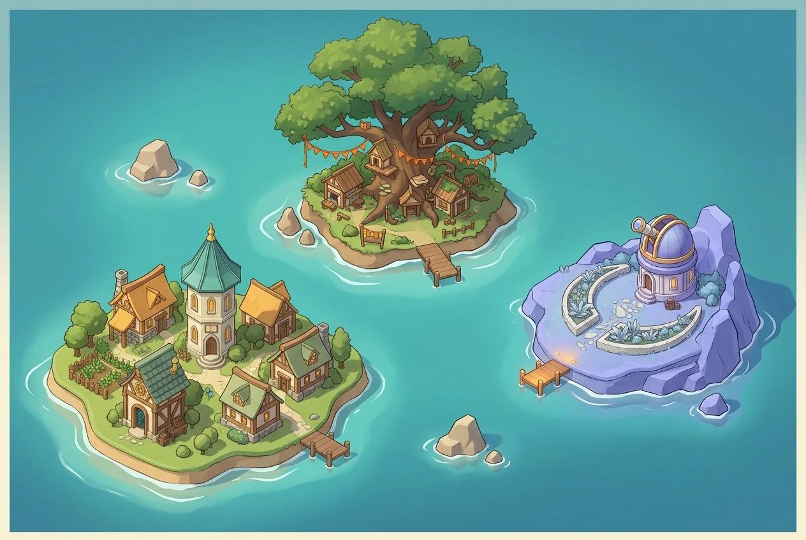
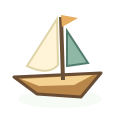

MỘT BUỔI ÊM ĐỀM TRÊN ĐẢO
Hôm nay, mình khám phá gì?
☀
Nắng nhẹNgày trong thế giới mẫu
ĐẢO KHỞI ĐẦU




Chọn một hòn đảo để xem câu chuyện của nơi đó.
Robo ĐỒNG HÀNH CÙNG BẠN
Bảng giảng vẫn ở cùng bạn.Code và nét vẽ giữ trong phiên mẫu; tải lại sẽ mất.